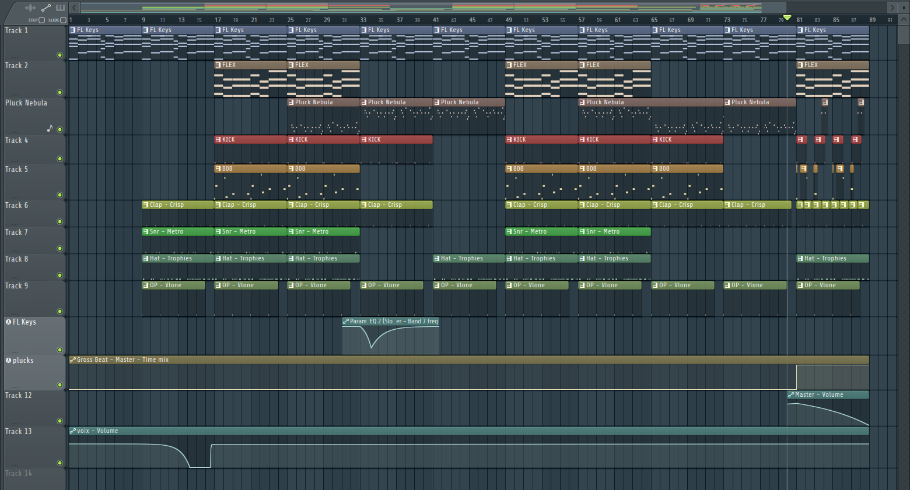

Pneu neige
Musique
La musique a toujours fait partie de ma vie depuis ma jeunesse grâce à
mon père, lui-même musicien. J'ai ainsi grandi en écoutant et en appréciant
différents genres musicaux, ce qui a nourri mon amour pour cet art.
Au collège, j'ai eu la chance d'intégrer une classe orchestre où j'ai pu
découvrir et pratiquer le saxophone. C'était une expérience passionnante
qui m'a permis de m'épanouir musicalement et de développer mes compétences artistiques.
Bien que je n'aie pas pu continuer à jouer de la musique au lycée,
j'ai toujours gardé cette envie de pratiquer cet art qui me tient tant à cœur.
C'est avec cette envie de continuer la musique que j'ai réalisé Pneu neige.

À l'origine, Pneu Neige était une blague entre amis. Nous avions
téléchargé FL Studio 20, un logiciel de musique assistée par ordinateur
(MAO) pour passer une soirée agréable. Nous ne voulions pas créer une
musique sérieuse et avons donc choisi des mots ou des phrases aléatoires sans aucun rapport. C'est ici qu'est né le titre de la musique: Pneu neige.
Mais au fur et à mesure que le projet avançait, nous avons commencé à
réaliser qu'il y avait un potentiel. J'ai puisé mon inspiration dans l'un de
mes groupes de musique préférés pour créer l'instrumentale, tandis que
mon ami a rédigé les paroles.
Bien que nous n'ayons eu aucune expérience en production musicale, nous
avons tout appris cette nuit-là, de l'écriture à la gestion des logiciels tels
que Autotune ou les packs de sons.
Finalement, ce qui a commencé comme une blague est devenu une
véritable création musicale. Pneu Neige est le fruit de notre imagination et
de notre passion pour la musique. Cette expérience nous a ouvert les
portes d'un nouveau monde de créativité et nous a donné envie de
poursuivre dans cette voie.